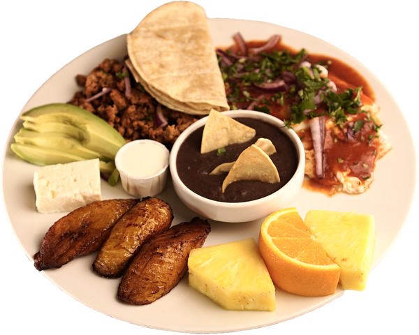
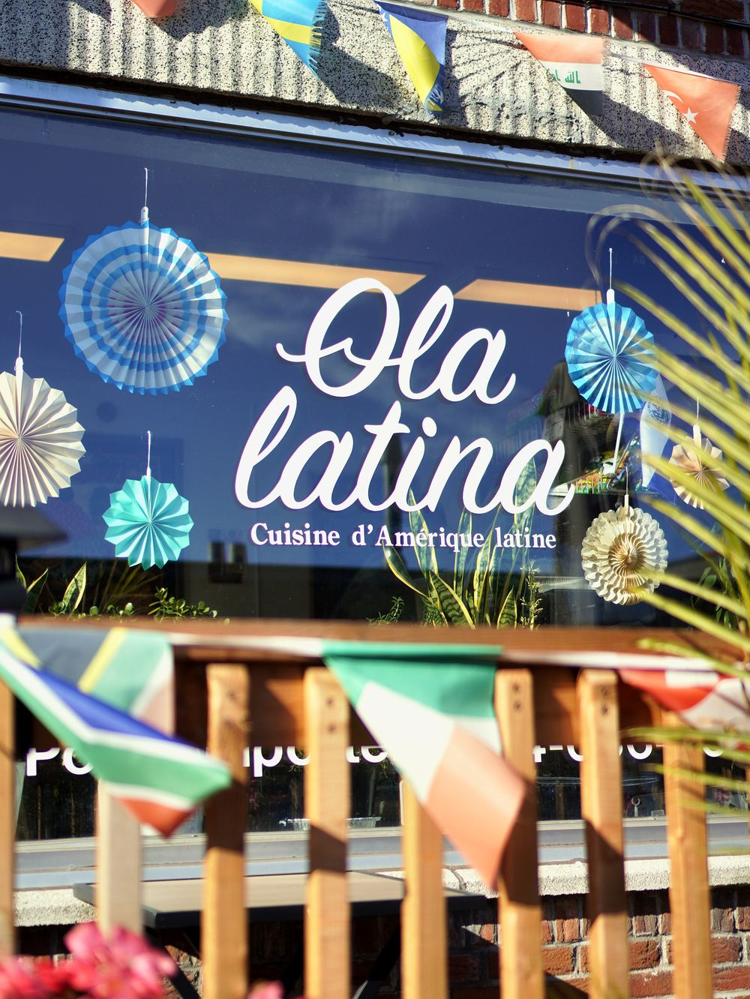
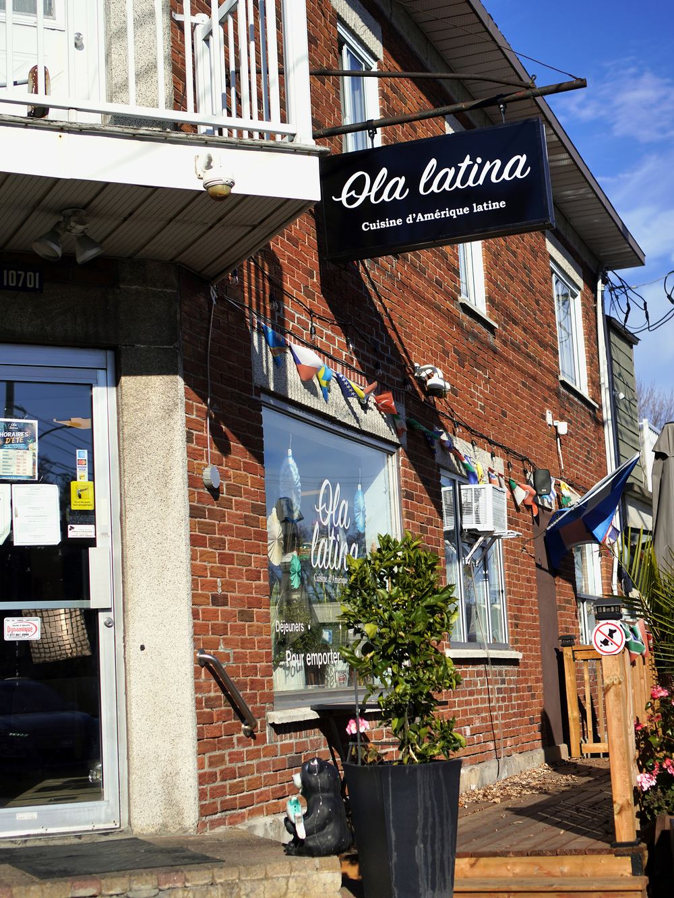
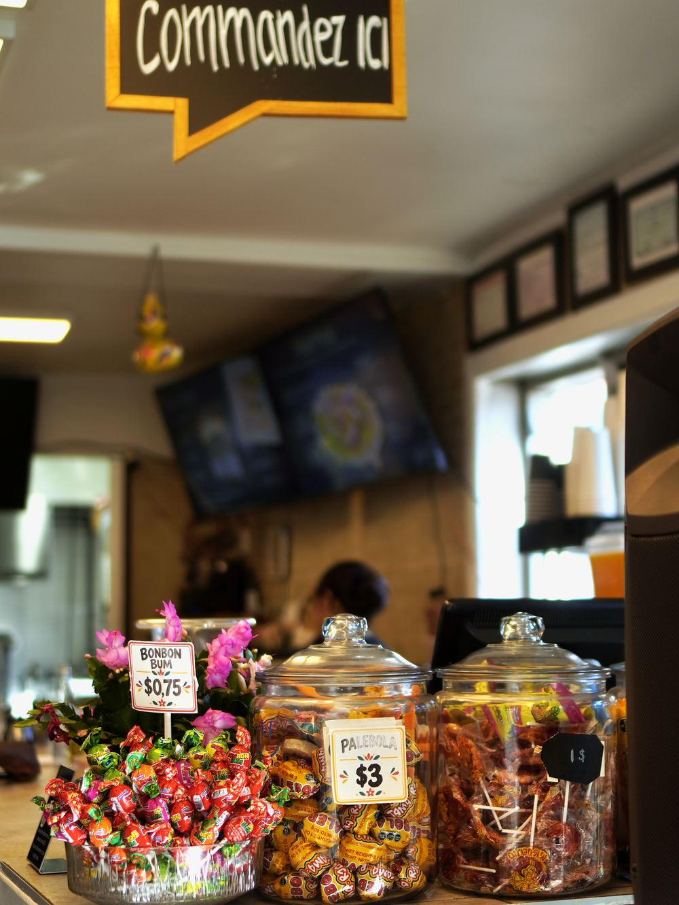

Bienvenue chez
Ola
Latina
Cuisine latino-américaine
Saveurs mexicaines et spécialités salvadoriennes, à Montréal-Nord.

Notre histoire · Montréal-Nord
Les saveurs de chez nous
Chez Ola Latina, la cuisine est une histoire de passion, de partage et de découvertes. D'origine salvadorienne, notre inspiration culinaire s'est enrichie au fil des années, notamment grâce à un lien profond avec la culture et les traditions gastronomiques mexicaines : les saveurs du Mexique, inspirées par nos racines salvadoriennes.
Aujourd'hui, nous vous proposons un menu qui met à l'honneur les saveurs mexicaines, accompagnées de quelques spécialités salvadoriennes qui nous tiennent à cœur.
Chaque plat reflète notre amour de la bonne cuisine, notre désir de vous faire plaisir et notre goût pour les saveurs généreuses. Que vous veniez retrouver un plat que vous aimez ou découvrir une nouvelle spécialité, nous sommes heureux de vous accueillir chez nous.
Découvrir
Tout frais sorti de la cuisine


Horaires
- Lundi9h – 17h
- MardiFermé
- Mercredi – Samedi10h – 21h
- Dimanche10h – 18h